Eco-Morphology

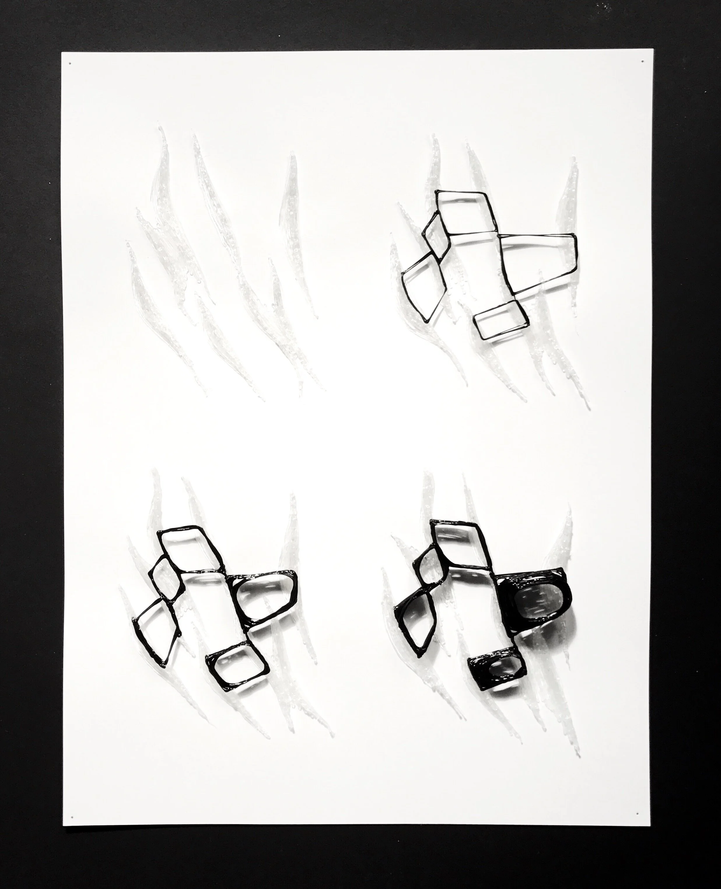
Eco-Morphology is an investigation into the relationship between water paths and human circulation, how they could work in harmony, and what this implies about community as a continuous thread and fluid network.
This began with an exploration into how water run-off pathways can be manipulated by landscape barriers (building on the ideas explored in Eco-Machine). Using computational modeling, a water flow pattern was established, and became the generator of the landscape's barrier walls.
In exploring the capabilities of a 3D pen, a formal language developed of layering one continuous strand on the barriers, which could coil up in one spot or stretch to another wall.
When translated to the scale of occupiable space, this continuous strand dictates the activities and feeling of the spaces, gathering where people gather and stretching where people are in movement.
Process
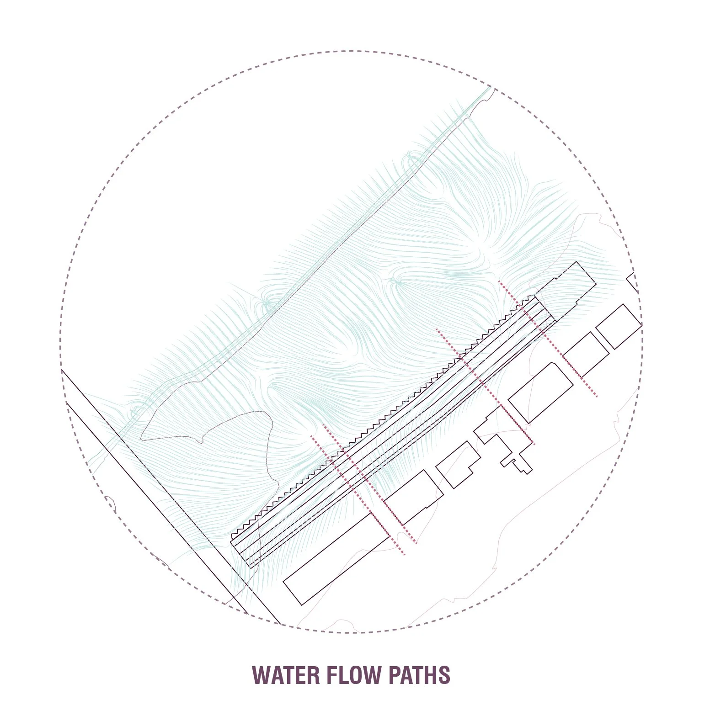
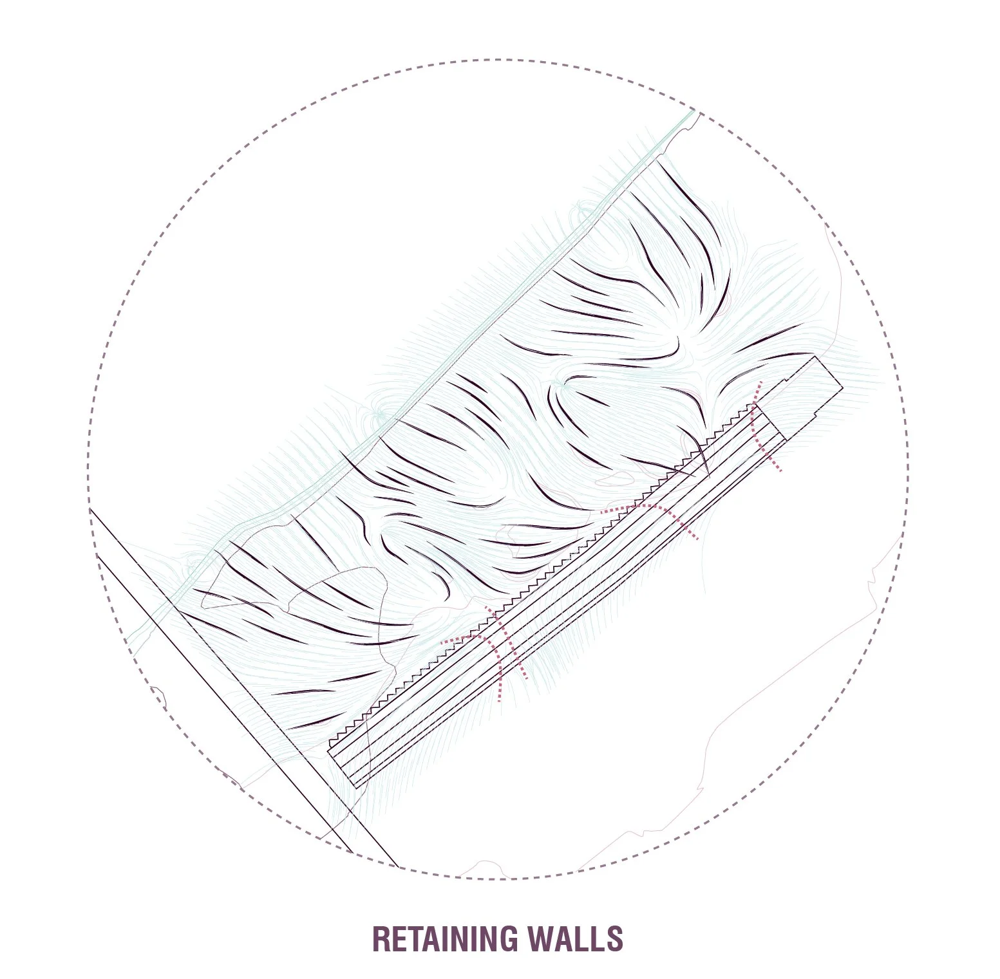
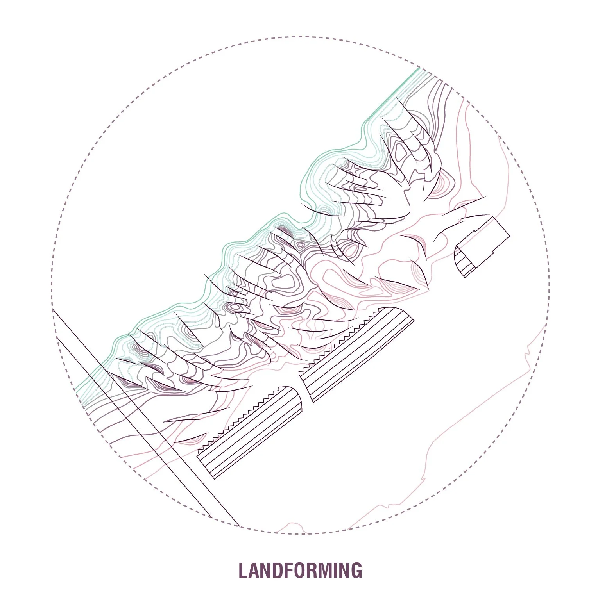
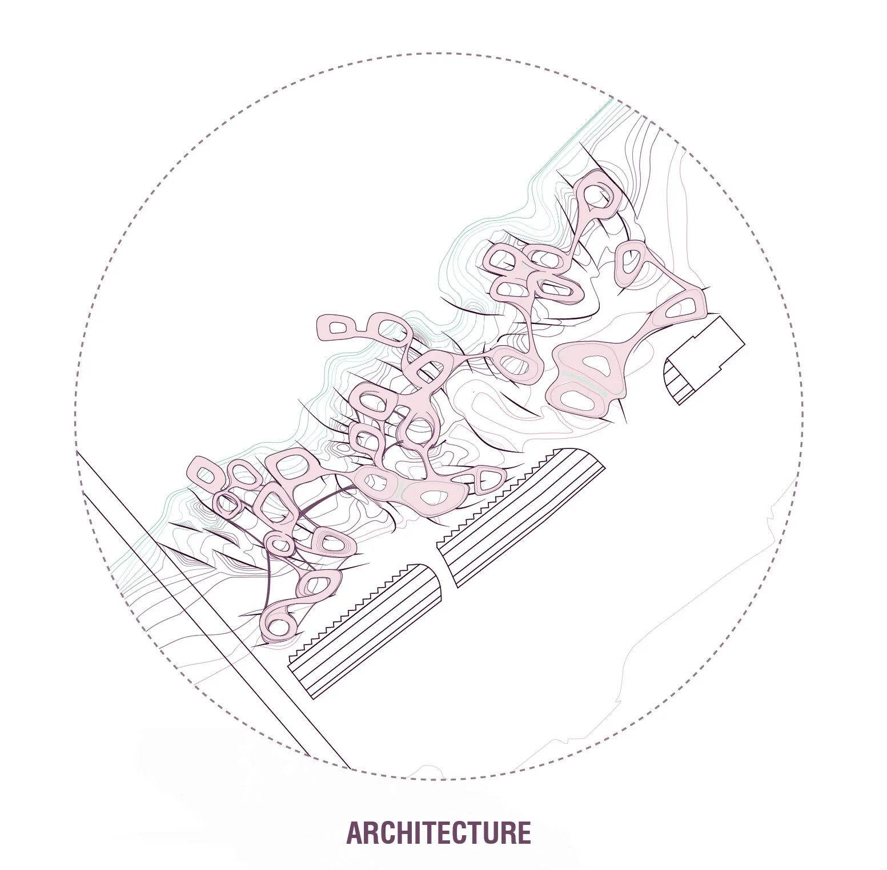
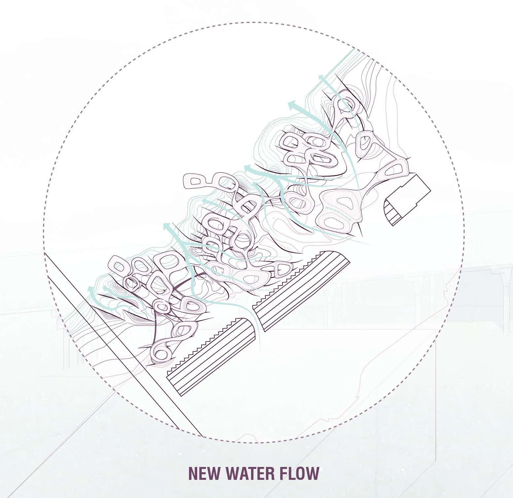

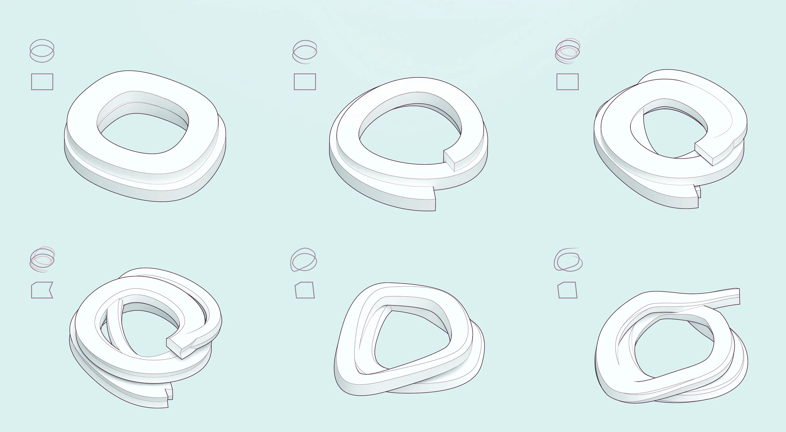
When the strand stretches it directs circulation or systems. When the strand coils upon itself, it becomes a place for people to gather. Large coils become central structures for public program. Peripheral rings become residential.
The continuous strand creates an architectural framework for a community network. The conditions that appear in the gradient of landscape to architecture function as an extension of public space into the site, implying the landscape could be a public park and allow access to the riverfront from the Strip District.


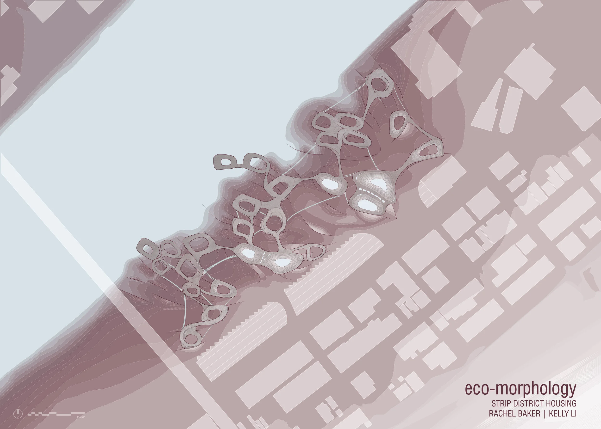

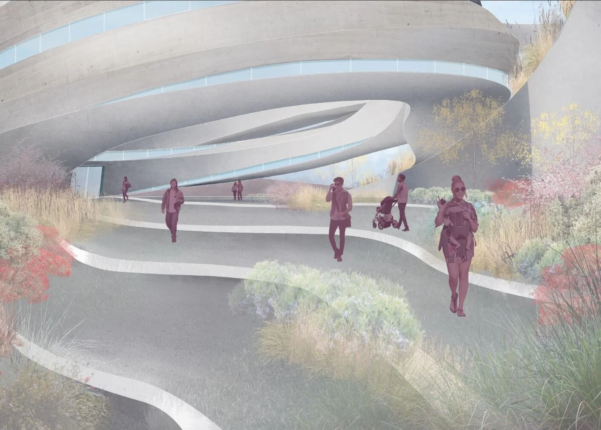
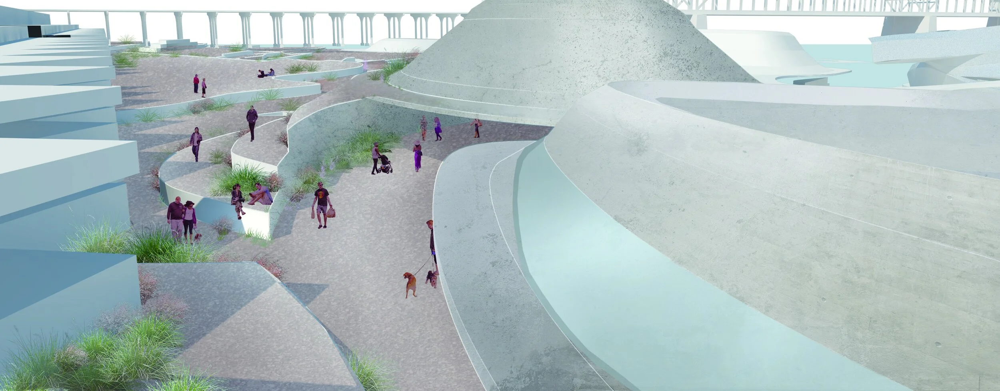
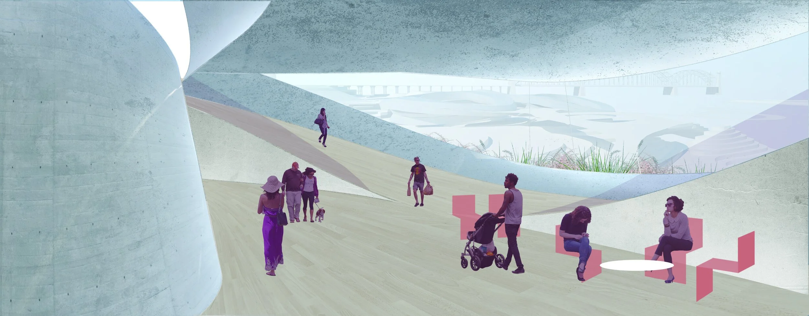
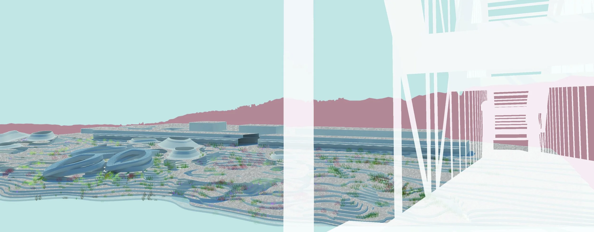
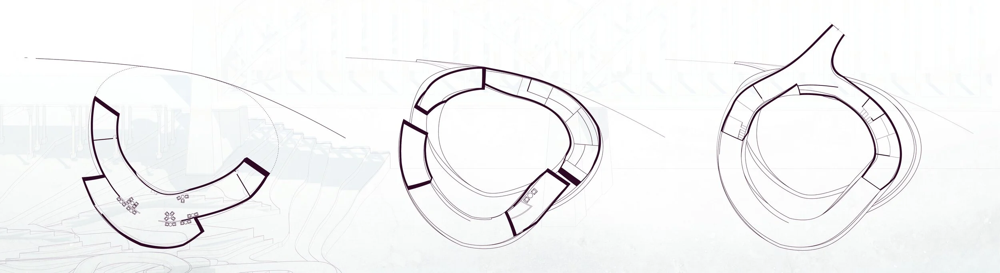